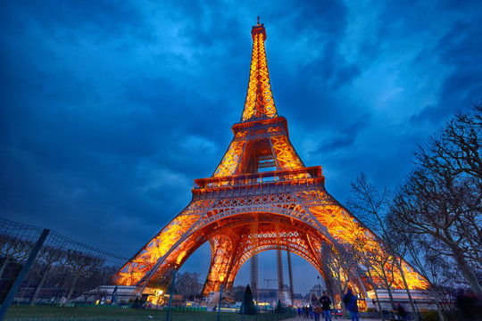

Fun Facts
Interesting Facts About the Eiffel Tower
- The tower was initially meant to be dismantled after 20 years but was saved due to its usefulness as a radio transmission tower.
- During World War II, the French cut the tower’s elevator cables so that German forces had to climb it on foot.
- The Eiffel Tower expands by about 15 cm (6 inches) in the summer due to heat expansion.
- It takes around 60 tons of paint to repaint the tower every seven years.
- Over 300 million people have visited the Eiffel Tower since its opening.

Visitor Information
The Eiffel Tower is open every day of the year, with varying hours depending on the season. Tickets can be purchased online or at the site, with different price tiers based on access levels, including elevator and stair options.
For a less crowded experience, early mornings or late evenings are recommended. Visiting during sunset offers a breathtaking view of Paris transitioning from day to night.
Surrounding Attractions
Champ de Mars
The vast park surrounding the tower is perfect for picnics, strolls, and enjoying breathtaking views of the monument.The Eiffel Tower also features cafés and snack bars that serve French pastries, sandwiches, and refreshing beverages, perfect for a quick meal before exploring further.